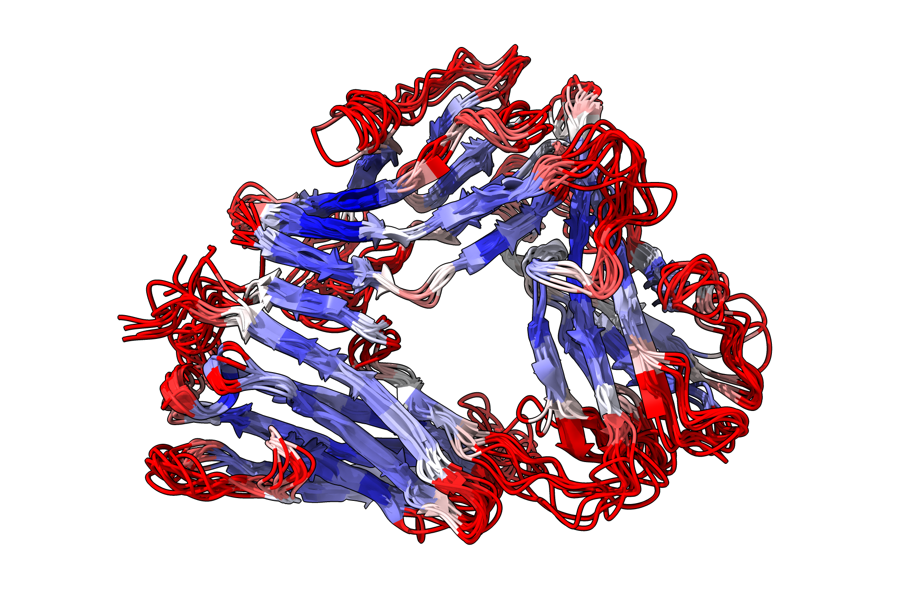
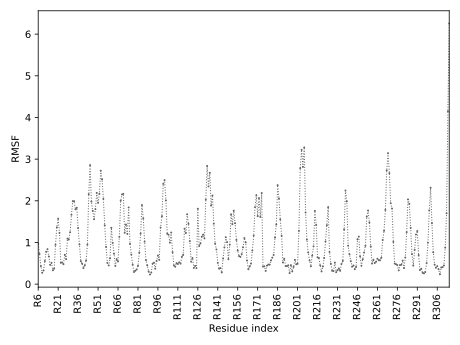
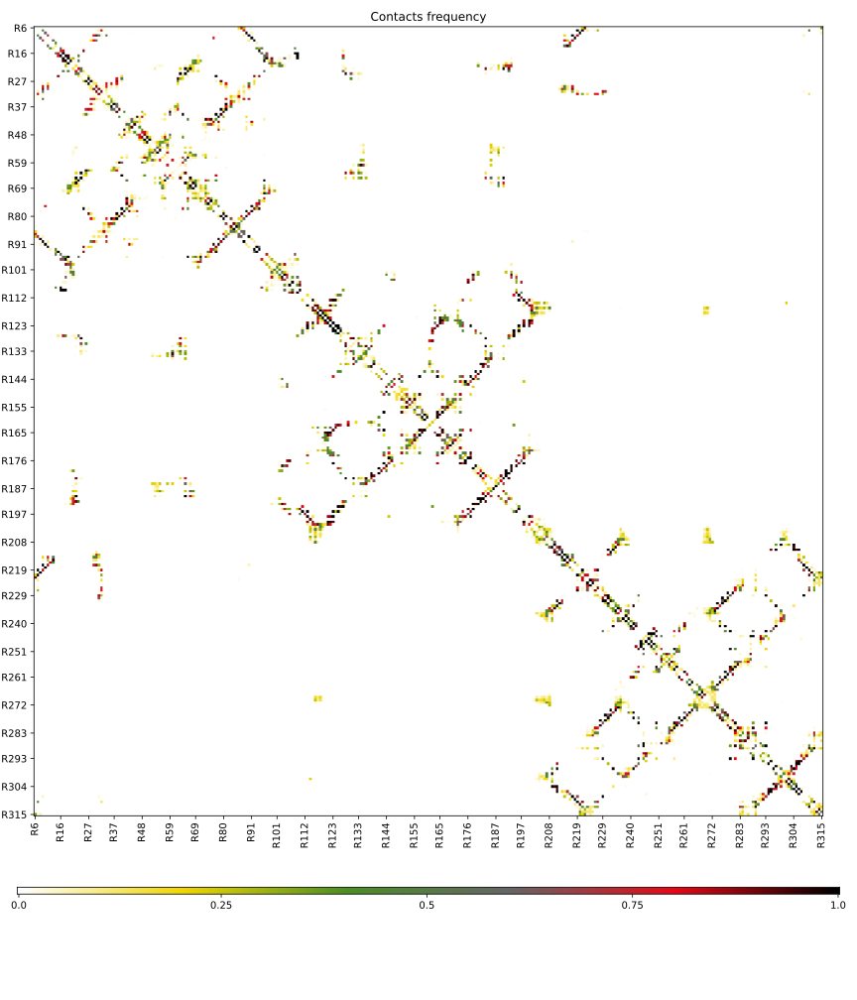

2. Flexibility modes¶
This page provides tutorial for running CABS-flex in different flexibility modes.
2.1 Flexible¶
In flexible mode, distance restraints are applied only to residues forming secondary structural elements, allowing greater flexibility in loops and unstructured regions. To run CABS-flex in flexibile mode, use the default setting (see chapter 1.2) with the following command:
CABSflex –i PDB/FILE
For example:
CABSflex –i 1g0y
will download 1goy.pdb file from PDB to cache and start simulation on default settings, while
CABSflex –i 1g0y.pdb
would try to open file 1g0y.pdb from working directory.
Picture below shows 10 representative models for that run:

RMSF plot for simulation in flexible mode. Note the difference in fluctuation at loop region e.g 201-216 across modes:

Contact map for receptor in flexible mode:

Movie below shows 10 representative models for that run:
Movie below shows 10 representative models colored by RMSF values for run in flexible mode:
Movies were created in ChimeraX, scripts are available here